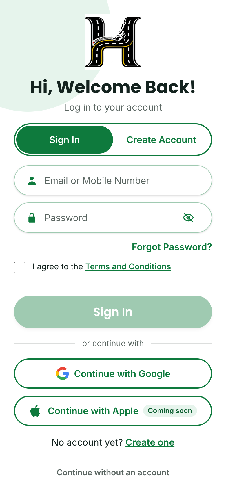
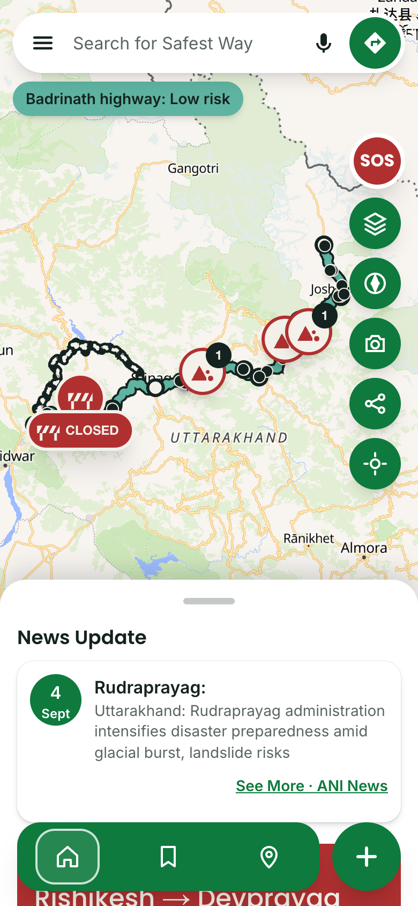
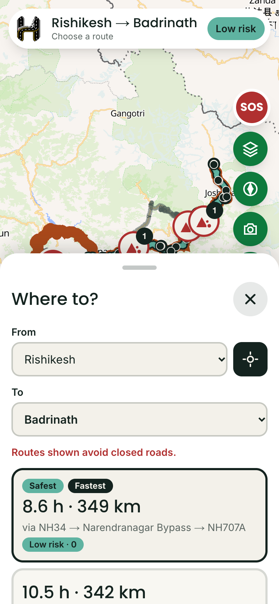
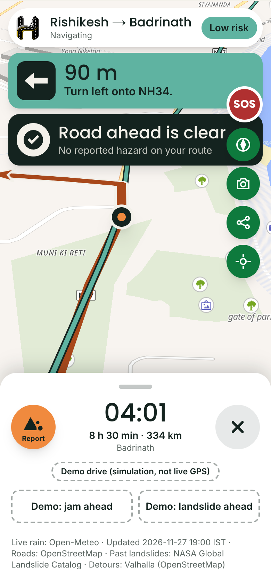
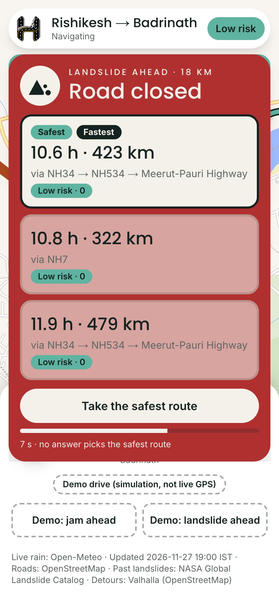
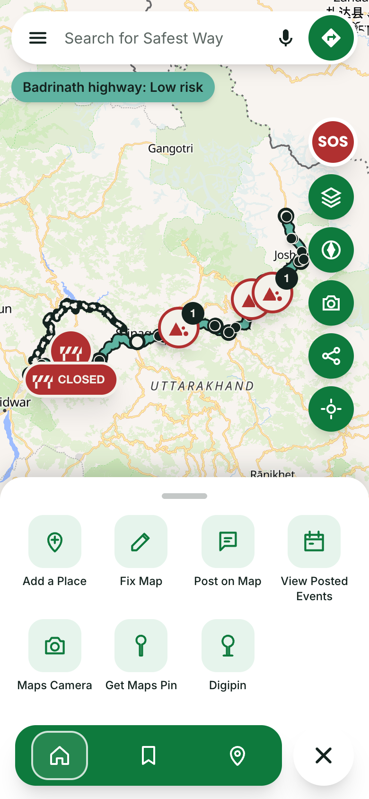
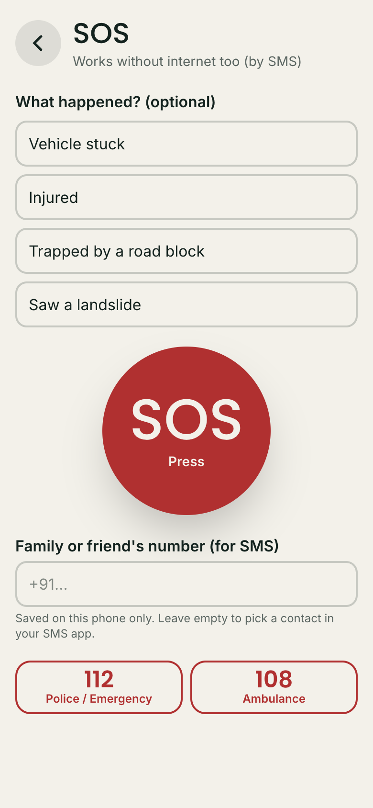
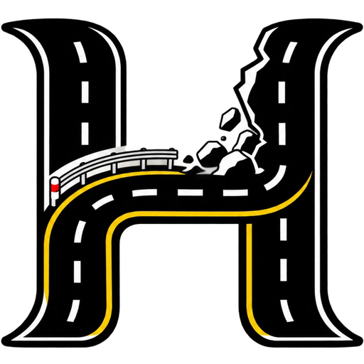

Algonex 1.0 · Round 1 · 27 Nov 2026
Himrakshak
The safest way through Himalayan roads
Predict. Avoid. Survive.
Team Elite Zero Division · Maya Devi University, Dehradun
Algonex 1.0 · Round 1 · 27 Nov 2026
The safest way through Himalayan roads
Predict. Avoid. Survive.
Team Elite Zero Division · Maya Devi University, Dehradun
The problem
roads blocked by landslides in Uttarakhand in one monsoon spell (July 2026)
pilgrims on the yatra routes by 25 July 2026; the yatra was suspended several times
recorded landslides within 2 km of the Rishikesh–Badrinath highway (NASA catalogue, 2007–2017)
Rain forecasts exist, but nobody turns them into "is my road safe at 6 AM?"
Google Maps does not know a road closed 20 minutes ago in a valley.
Calling for help fails exactly where slides happen: deep valleys, no data.
Sources: Free Press Journal, NewsOnAir (July 2026); NASA Global Landslide Catalog
2
Understanding the problem statement
Drives Rishikesh–Badrinath weekly. Needs one glance: which road, when to leave, what is closed ahead. One hand, big buttons.
First time in the mountains. Needs a safe route, a clear warning in plain words, and an SOS that works without data.
Needs to see who is stuck and where, live, and which roads drivers report as blocked.
Our goal
Turn live rain, terrain and driver reports into one decision: which road to take, when to leave, and what to do if it closes on the way.
3
Our solution
Lake data: Pandey (2026), Open Geosciences 18(1)
4
How the risk engine works
score = rain × slope × history (0–100)
rain: Open-Meteo, last 24 h + next 6 h · slope: 1.0 flat to 2.0 very steep · history: 1.0 to 1.8 by past slides within 2 km
Drive normally
Drive with care, check before leaving
Avoid; wait for the safe time
Earliest hour in the next 12 when every stretch is below 70.
Two drivers within 1 km in 12 h mark the road closed; routing avoids it at once.
Valhalla (OpenStreetMap) finds the other valley road, e.g. via Tehri instead of NH-7.
5
UI/UX design and structure

1 · Sign in

2 · Live map

3 · Pick a route

4 · Navigate

5 · Alert, reroute
Green brand · 48 px tap targets · every colour also written in words ("High risk") · voice for turns and alerts
6
Initial proof of work

Quick actions

SOS
commits on GitHub
verified places, all 4 dhams
glacial lakes with sourced data
running cost: free and open data
7
How it is built
Next.js + React + TypeScript, Tailwind; Android via Capacitor (GPS, camera, deep links)
MapLibre + OpenStreetMap tiles; Valhalla routing with closed-road avoidance
Open-Meteo rain, NASA landslide catalogue, Google News, peer-reviewed lake study
Supabase: Postgres, realtime, photo storage, auth; row-level security on every table
Same engine works for any hill road: add the route file and it gets rain risk, detours and reports. Heavy work (routing, rain) runs and caches on the server; the phone only draws and tracks GPS.
8
Action plan for the next 20 hours
Tonight · 9 PM–1 AM
1 AM–6 AM
6:30 AM Round 2 → 11 AM
11 AM–3 PM final
Rule we follow: something working and demo-able at every round. Working beats impressive.
9

Live demo on the Android app
github.com/Surajrana-git/himrakshak · Team Elite Zero Division